阿里-UniSGR：统一语义 ID 生成与排序框架
UniSGR: Unified Framework for Semantic ID Generation and Ranking 是 Alibaba International Digital Commerce Group 作者 Jiawei Sun、Jun Yang、Ziyue Guo、Dongyue Xu、Jianan Yan、Lifang Deng 和 Xiaoyi Zeng 在 2026 年 7 月 5 日公开的推荐系统论文，论文入口为 arXiv:2607.04068。PDF 首页和作者邮箱均指向阿里国际数字商业相关团队，实验场景是 Lazada 首页 “Guess You Like” 推荐。论文 PDF 仍保留 ACM 模板里的占位会议和 2018 年模板信息，因此本文按 arXiv 记录与 PDF 正文理解，不把模板会议信息当作真实录用来源。PDF 与 arXiv fact pack 的标题一致，未在正文或 arXiv 注释中看到可核验代码仓库链接。
这篇论文值得单独精读，是因为它不只说“生成式推荐可以替代召回”，而是把工业级推荐链路里最难缝合的两个环节放到同一个框架里：前端需要用 semantic ID 自回归地产生候选，后端又需要对 click、add-to-cart、purchase 这类业务目标做细粒度排序。UniSGR 的主张是，生成器如果只学下一 item 的 semantic ID，候选可能语义相关却不一定对最终 GMV 或转化有价值；反过来，如果生成之后再外接一个独立 ranker，级联系统的目标错位又回来了。它把 ranking loss、Task-Aware Tokens、Funnel-Aware Contrastive Learning 和服务端 STARK beam search 放在一起，试图让生成和排序共享同一套表征与同一次服务路径。
现有生成式检索虽然能用 semantic ID 缓解传统多阶段级联的候选截断问题，但它仍难以完成工业推荐所需的细粒度多目标排序；如果再把独立排序器接在生成器后面，生成目标与最终业务效用之间的错位会重新出现。
1. 背景和问题
传统工业推荐系统通常是级联架构：召回阶段先用双塔、向量检索或规则过滤从海量 item 中取回候选，后面再进入粗排、精排和重排。这个结构的工程优势很明确，召回侧可以离线建索引并满足严格延迟，排序侧可以接入更多交叉特征和多目标 label。但它的根本限制也很稳定：上游召回丢掉的 item，下游 ranker 再强也无法恢复；每一层局部优化自己的指标，端到端推荐目标被拆散。UniSGR 的引言把这个问题放在 DLRM 与 generative retrieval 的交界处：semantic ID 生成式推荐承诺让模型直接生成候选标识，理论上比多阶段截断更统一，但已有方法多停留在“生成相关候选”，没有把高价值行为目标和细粒度排序能力内生化。
对电商首页来说，这个缺口尤其明显。用户的一次曝光可以对应点击、加购、支付等不同漏斗行为，点击并不等于购买，购买又比普通点击稀疏得多。若生成器只以 next-item prediction 或 click-supervised hit rate 为核心目标，它可能更擅长找语义相近、点击概率较高的商品，却不一定对下游转化排序有利。论文因此把问题定义成 semantic ID generation and ranking 的统一框架：模型需要在生成候选时就知道不同业务目标的价值权重，并且在排序时复用生成过程中的 decoder states、semantic ID representations 与用户序列表征，而不是把候选再送进一个完全独立的 ranker。
进一步看，UniSGR 选择 Lazada 首页而不是小型公开数据集，也改变了这篇论文的阅读重点。公开推荐论文常常只验证离线 hit rate 或 NDCG，但首页流量里候选规模、行为稀疏、转化延迟、服务延迟和多目标权衡会同时出现；一个只会生成相似 item 的模型，未必能替代已有 cascade stack。本文把 IPV、Transaction Count 和 GMV 放进最终在线结果，说明作者关心的是生产排序链路中最难替换的一段：既要保证召回覆盖，又要让候选在同一次模型服务里被高价值目标重新组织。因此，后文读方法时不应只把 VA-PMTP、TAT 或 STARK 看成独立技巧，而要看它们分别修补了级联系统里的哪个接口。
这篇论文还有一个工业系统层面的动机：生成式推荐的服务瓶颈不只在模型质量，也在 beam search。Semantic ID 通常只有几层，比如 3 层 codebook，但 beam width 可以很大。常规 beam search 把候选扩到 batch 维，导致共享 prefix 被重复计算，KV cache 也要反复复制和重排。对于短序列 semantic ID，这种内存带宽和 kernel 利用率损失会非常突出。UniSGR 的 STARK 方案因此不是附属优化，而是论文能否进入“Two Phase - One Service”的必要条件：同一个模型既要产生候选又要给候选打多目标分，如果推理实现仍然像普通文本生成那样低效，工业首页场景就很难接受。
我理解 UniSGR 的问题意识可以概括为三个接口错位。第一，召回和排序的目标错位：召回只保证候选覆盖，排序才优化最终价值。第二，semantic ID 和业务行为的错位：item tokenizer 常常学到语义相似性，却不一定学到 add-to-cart 或 pay 的漏斗偏好。第三，生成式 decoding 和在线服务的错位：理论上自回归 semantic ID 很优雅，实际 beam search 却可能比传统向量召回更难部署。UniSGR 的价值就在于同时回答这三个问题，而不是只在离线 HR@K 上比一个新模型。
2. 方法
2.1 数据组织与 tokenizer
UniSGR 的训练入口是两阶段数据组织。Multi-scenario pre-training 把多个业务场景的用户行为日志混合起来，构造 chronological interaction sequence 到 next item semantic ID 的生成样本；每个样本包含用户 profile、场景上下文、历史交互 item 以及下一个 item 的 semantic ID 序列。Scenario-specific alignment 则回到目标场景，加入 click、add-to-cart 和 purchase 等更丰富的行为标签。论文把目标 item 的 semantic ID 写作 $s_v=(c_{v,1},c_{v,2}, ldots,c_{v,d})$，其中 $d$ 是 semantic layer 数；预训练阶段的生成概率是：
符号解释：$x_u$ 表示用户 profile 和上下文特征，$S_u$ 表示用户历史交互序列，$c_{v_{L+1},j}$ 是目标 item 在第 $j$ 层 semantic codebook 上的 token。这个公式说明 UniSGR 的基础任务仍是 semantic ID 的自回归生成，只是后续会把 business value 和 ranking objective 接到这个生成过程上。
Tokenizer 先用 Qwen3-VL 处理 item 的文本 metadata 和视觉特征，得到 multimodal collaborative item embedding：
符号解释：$T_i$ 是商品文本信息，$V_i$ 是视觉特征，$f_\theta$ 是经过行为交互对微调的 Qwen3-VL 表示函数，$e_i$ 是用于量化的 item embedding。为了让 embedding 不只是视觉或文本相似，而是贴近协同过滤关系，论文用 interacted target item 作为正样本，用 exposed-but-unclicked items 作为 hard negatives，再加 in-batch items 作为 easy negatives，优化 InfoNCE：
符号解释：$e_{i+}$ 是与当前 item 有交互关系的正样本，$C_i$ 包含正样本、曝光未点击 hard negatives 和 batch 内负样本，$\mathrm{sim}(\cdot,\cdot)$ 是余弦相似度，$\tau$ 是温度。之后模型用 RQ-VAE 和 Sinkhorn-Knopp balanced assignment 生成 3 层 semantic hierarchy，codebook size 取 $K=8192$。这个 tokenizer 的设计说明 UniSGR 不是直接把原始 item ID 换成随机 token，而是把多模态语义、协同行为和量化平衡一起放入 semantic ID 生成前端。
2.2 UniSGR 框架：轻量 MemoryNet 与稀疏 MoE 解码器
UniSGR 的整体架构是不对称 encoder-decoder。Encoder 叫 MemoryNet，负责处理用户 profile、历史 item 和上下文标签；它没有使用 full self-attention，而是把 profile 通过 MLP 映射后作为 prefix token 加到行为序列前面，每个历史 item 用 semantic ID embedding、behavior type 和 position 信息共同表示，最后输出静态 memory representation $M$。这个选择很工程化：用户历史可以很长，但生成 semantic ID 所需的是压缩后的兴趣记忆，而不是在 encoder 侧做昂贵的二次复杂度 self-attention。
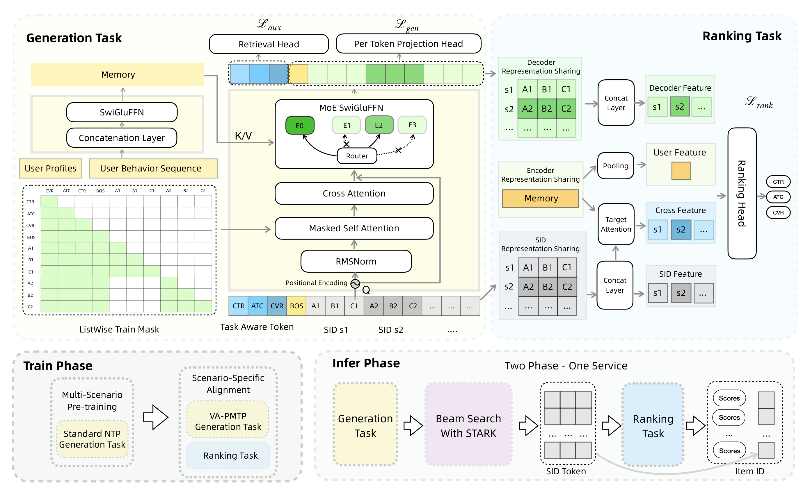
Figure 1 把论文的几条主线画在同一张图里。左侧是 generation task：用户画像和行为序列进入 MemoryNet，semantic ID decoder 通过 cross attention 读取 memory，再用 masked self attention 自回归地产生 SID token。中间有 Retrieval Head、Per Token Projection Head、MoE SwiGLUFFN、Task Aware Token 和 ListWise Train Mask。右侧是 ranking task：Ranking Head 不独立建一套 item-ID ranker，而是复用 SID representation、encoder representation、decoder feature、cross feature 和 target attention。下方的 Train Phase / Infer Phase 也很重要，训练时先 multi-scenario pre-training，再 scenario-specific alignment；推理时生成任务、STARK beam search 和 ranking task 被串成一个服务路径。这张图说明 UniSGR 的“统一”不是口号，而是通过三个共享点实现：semantic ID 表征共享、encoder 表征共享、decoder 状态共享。若这三个共享不存在，ranker 只是外接模块，无法把排序梯度传回生成器。
Decoder 是 sparse MoE Transformer。它以 learnable BOS token 初始化，使用 cross-attention 条件于 $M$，并给不同 semantic ID 层加入 Token Type Embedding，因为上层 code 通常表达粗粒度语义簇，下层 code 负责更细粒度的 item 唯一性。论文还使用 GQA 降低 KV cache 成本，用 shared SwiGLU-MoE 替代标准 FFN，并配合 RMSNorm 与 QK-Norm 稳定训练。核心计算可以写成：
符号解释：$Expert_{shared}$ 捕捉跨场景共性推荐模式，$Expert_i$ 是路由专家，$g_i(x)$ 是 router 给第 $i$ 个专家的门控权重。这部分的核心机制是用稀疏激活扩大推荐生成器容量，同时让专家分担不同语义子空间和用户兴趣模式，而不是让所有商品兴趣都挤在一个 dense FFN 里。
2.3 两阶段训练、VA-PMTP 与统一 ranking
预训练阶段使用标准 NTP，模型只预测下一个 item 的 semantic ID 序列，目标是学到跨场景的通用用户兴趣和 item 语义。这个阶段解决覆盖面问题，但没有显式区分 click、atc、pay 的业务价值。对应损失为：
符号解释：$d$ 是 semantic layer 数，$c_{v_{L+1},<j}$ 表示目标 item 已经生成的前缀 code。进入目标场景后，UniSGR 引入 Value-Aware Parallel Multi-Token Prediction。普通 NTP 一次只预测一个 next item，而目标场景里同一 session 可能同时包含 click、add-to-cart、purchase 等不同价值行为。PMTP 用定制并行 mask 允许同一 session 里多个 autoregressive semantic-ID target 并行训练：同一个 item 内部仍保留 semantic ID 层级的 causal mask，不同 item 之间互不可见，所有 target 共享 BOS token。
再加上行为权重，就得到 VA-PMTP：
符号解释：$\tau$ 表示行为目标，例如 click、add-to-cart 或 purchase；$w_{\tau}$ 是业务价值权重；$S_{\tau}$ 是 session 中属于该行为目标的 item 集合。这个 loss 的作用不是简单增加训练样本，而是把高价值行为在生成训练阶段就加权进去，让生成器更倾向产生对最终排序有用的候选。
Unified ranking module 则接在生成 decoder 上。给定 semantic IDs 和 generative hidden states，模型预测不同任务 label：
符号解释：$s_v$ 是候选 item 的 semantic ID 序列，$\hat{y}^{(task)}_v$ 是候选在某个行为目标上的预测概率。Ranking loss 是各目标 BCE 的加权和：
符号解释：$\lambda_{\tau}$ 控制不同目标的损失权重，$\mathcal{L}_{\tau}$ 是 click、add-to-cart 或 purchase 的二分类交叉熵。这里最值得注意的是梯度路径：ranking module 复用 semantic ID representation、encoder representation 和 decoder representation，因此排序损失会影响生成器使用的表征。如果 ranking head 完全独立，UniSGR 就退化成“生成后再排”，而论文想避免的正是这种目标断裂。
2.4 Task-Aware Tokens 与 FACL
只靠 ranking loss 仍然可能不够，因为 click、add-to-cart、purchase 三种目标相关但不等价。UniSGR 因此在 decoder input 前面加入三个 learnable task tokens：
符号解释：$e_{click}$、$e_{atc}$、$e_{pay}$ 分别对应点击、加购和支付目标；这些 token 按漏斗顺序放在 BOS 之前，后续 semantic ID token 可以 attend 到前面的 task tokens。因为它们是固定 prefix，不增加自回归 decoding 步数。TAT 的意义是让 decoder hidden states 从第一步就带有目标条件，而不是等 ranking head 最后才告诉模型“这个候选该服务哪个目标”。
不过 task tokens 也可能语义漂移：它们通过 attention 影响后续序列，如果监督太弱，click token、atc token 和 pay token 未必真的学到漏斗差异。论文使用 Funnel-Aware Contrastive Learning 作为辅助约束：
符号解释：$h_{\tau}$ 是任务 token 的输出表示，$v^+$ 是与该任务匹配的正 item embedding，$v^-_j$ 是负样本，$t$ 是温度。负样本沿漏斗逐步变难：click token 的负样本可以是随机 item，add-to-cart token 的负样本是 clicked but not added，purchase token 的负样本是 clicked but not purchased。这样做把目标差异编码到 task token 本身，而不是只靠最终 BCE 学一个模糊的多目标 head。
总目标可以概括为：
符号解释：$\mathcal{L}_{gen}$ 是 VA-PMTP 生成损失，$\mathcal{L}_{rank}$ 是多目标 ranking loss，$\mathcal{L}_{aux}$ 是 task-token contrastive loss，$\alpha$ 控制排序损失强度。这套目标的风险在于业务权重、负样本构造和目标稀疏性会共同决定模型学到的偏好；如果 pay 信号噪声大或延迟长，value-aware generation 可能放大不稳定标签，而不是天然更接近长期用户价值。
2.5 STARK：树注意力服务推理
STARK 处理的是 semantic ID beam search 的推理效率。常规实现把 top-K candidates 沿 batch 维展开，每个 beam 都有自己的 KV cache，即使多个候选共享同一 prefix，也会重复计算和复制。Semantic ID 序列很短，beam width 又很大，这会让复制和重排 cache 的开销比 token 计算本身更突出。STARK 的想法是把候选从 batch 维扩展改成 sequence 维扩展：把 beam search tree 的候选 token 拼到同一个序列里，再用 tree attention mask 保证每个 token 只能看见祖先节点和自己。
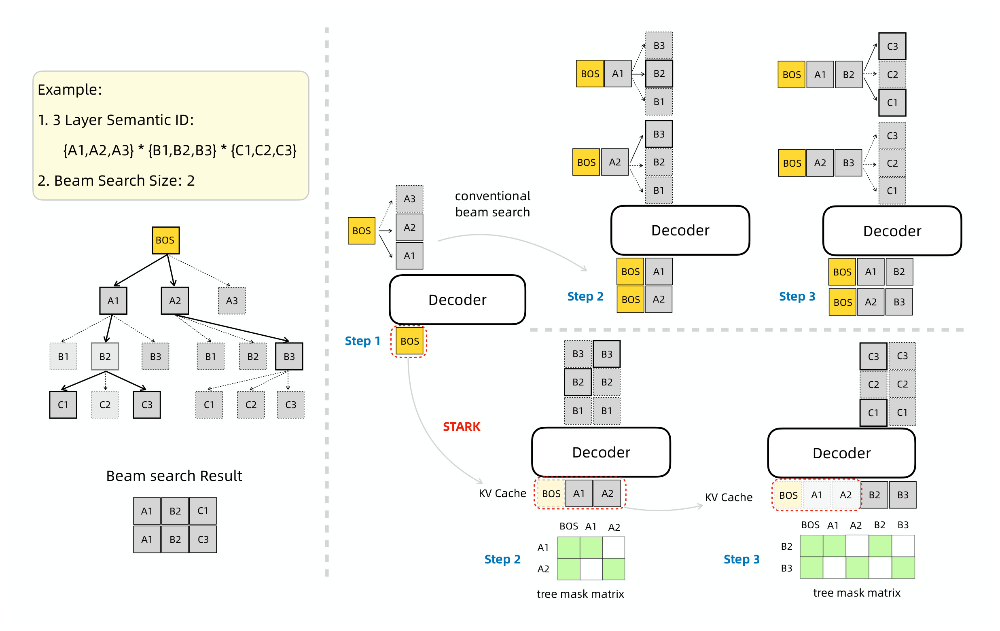
Figure 2 用一个 3 层 semantic ID、beam size 为 2 的例子展示了差异。左边 conventional beam search 在 Step 2、Step 3 把候选分支复制成多个 batch 样本，BOS、A1、A2、B2、B3 这类共享 prefix 会重复存在于多个路径。右边 STARK 把这些 token 按树结构组织在 sequence 维里，下面的 tree mask matrix 控制可见性：不同分支之间互相不可见，但共享祖先只计算一次；KV cache 也按树拓扑引用，而不是每个候选分支复制一份。这个图对系统实现很关键，因为它说明 STARK 没有改变 beam search 的结果语义，只改变了张量组织方式。换句话说，它不是牺牲候选质量换速度，而是在 semantic ID 固定深度和固定 beam width 的条件下，把原本重复的 prefix 计算显式去掉。
STARK 的 mask 可以写成：
符号解释：$p_i^{(l)}$ 是第 $l$ 层 semantic level 上的第 $i$ 条候选路径，$Anc(p_i^{(l)})$ 是它的祖先节点集合。若 $j$ 是候选路径的祖先或当前位置，mask 值为 1；否则为 0。这个约束让候选分支保持 causal isolation，同时共享 prefix 只保留一次。由于 semantic ID 深度和 beam width 在服务时通常固定，tree mask 和 KV cache index 可以预先构造为轻量映射，从而减少在线复制。
3. 实验结果
3.1 STARK 的服务效率
论文先给 STARK 的端到端服务指标，因为这是 UniSGR 能否在线使用的前提。表中比较了 w/o STARK 与 STARK，在 batch size 1 和 8 下的 QPS、平均延迟和 P99 延迟。
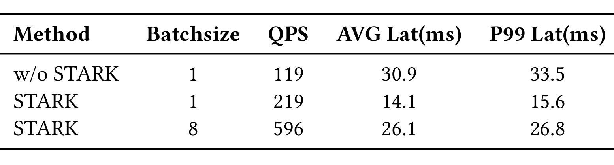
Table 1 显示，不使用 STARK 时 batch size 1 的 QPS 是 119，平均延迟 30.9 ms，P99 为 33.5 ms；使用 STARK 后，同样 batch size 1 的 QPS 提升到 219，平均延迟降到 14.1 ms，P99 降到 15.6 ms。batch size 8 时 QPS 达到 596，平均延迟 26.1 ms，P99 26.8 ms。这个结果支持论文摘要里的“200% throughput improvement”说法，但更重要的是它说明 semantic ID beam search 的瓶颈确实在工程实现而不只是模型参数量。若 STARK 只是略微加速，统一生成与排序可能仍然会被传统召回服务压制；现在至少在论文场景里，树注意力和 KV cache reorganizing 给了 UniSGR 一个可部署的服务入口。需要注意的是，表格没有披露完整机器配置、流量规模和生产级稳定性细节，因此它证明的是同一实现环境中的相对加速，而不是所有系统都能直接复制同样绝对 QPS。
3.2 离线召回：UniSGR-M 对比基线
离线 retrieval 评估使用 Lazada 首页大规模电商日志，论文说明所有方法在相同 data split、semantic ID tokenizer 和 serving constraints 下比较。指标是 HR@50、HR@100、HR@200 和 HR@500。
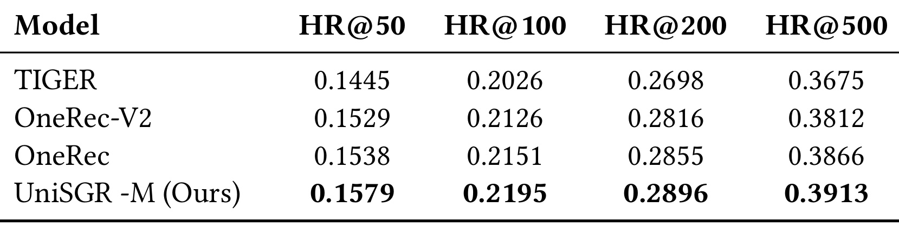
Table 2 中，TIGER 的 HR@100 为 0.2026，OneRec-V2 为 0.2126，OneRec 为 0.2151，UniSGR-M 达到 0.2195；HR@500 上 UniSGR-M 是 0.3913，高于 OneRec 的 0.3866 和 OneRec-V2 的 0.3812。增幅不是压倒性的，但方向很一致：四个 cutoff 都领先。这个结果的含义不能读成“UniSGR 已经彻底替代所有召回模型”，因为数据是内部场景，规模和流量细节没有公开；更稳妥的理解是，在同一 tokenizer 和服务限制下，把 generation 与 ranking 共享训练确实没有牺牲 retrieval hit rate，反而带来小幅稳定提升。对工业推荐来说，这一点很关键：如果统一排序目标会损害召回覆盖，那么后续 GMV 或转化收益就可能只是 ranker 调参；Table 2 至少说明 UniSGR-M 的候选生成本身没有退化。
3.3 两阶段训练：预训练与场景对齐互补
论文接着比较 Multi-scenario pre-training、Scenario-specific alignment 和 Two-stage Training。这里不再只看总体 HR，而是按 Clk、Atc、Pay 三种行为分别报告 HR@100 与 HR@500。
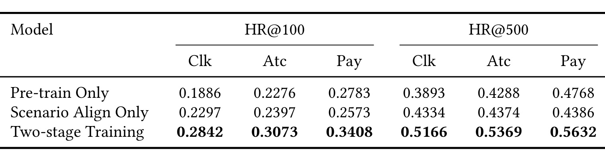
Table 3 是整篇实验里最能说明训练范式必要性的一张表。Pre-train Only 在 HR@100 下的 Clk/Atc/Pay 分别是 0.1886、0.2276、0.2783；Scenario Align Only 分别是 0.2297、0.2397、0.2573；Two-stage Training 则提升到 0.2842、0.3073、0.3408。HR@500 也类似，两阶段训练达到 0.5166、0.5369、0.5632。这里能看到两个现象：预训练单独使用时，Pay-HR 比 Click-HR 高，说明多场景数据中确实有一些高价值行为线索；但只做场景对齐也无法覆盖充分兴趣空间。二者结合后，三个行为目标都显著更高。这个结果支撑 UniSGR 的 foundation-style 训练判断：先学跨场景用户和商品语义，再用目标场景的行为 label 调整 business objective，比单独押注其中一端更稳。
3.4 Semantic ID 粒度：8192 码本附近的折中
Semantic ID tokenizer 的粒度决定了生成空间和碰撞率。码本太小，不同 item 会撞到相同或相近 code，细粒度排序难以区分；码本太大，token 稀疏、参数效率下降，深层 codebook 可能利用不足。论文比较了 3 层对称 codebook，$L_1=L_2=L_3=K$，$K$ 取 2048、4096、8192 和 10240。
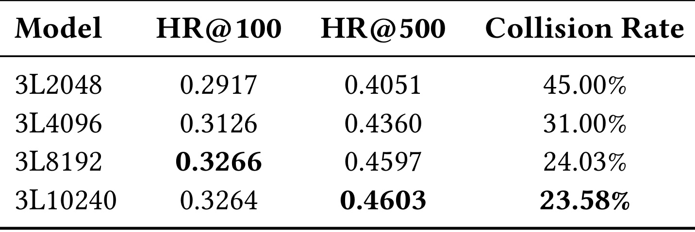
Table 4 显示，从 3L2048 到 3L8192，HR@100 从 0.2917 提升到 0.3266，HR@500 从 0.4051 提升到 0.4597，collision rate 从 45.00% 降到 24.03%。再扩大到 3L10240，HR@100 基本不变，为 0.3264，HR@500 仅到 0.4603，collision rate 降到 23.58%。这说明 UniSGR 的 tokenizer 不是越大越好，8192 附近已经接近边际收益平台。对工程实践而言，这张表比单纯报告最优 HR 更有用：semantic ID 既是模型标签空间，也是线上 beam search 的候选空间，码本扩大不仅影响效果，还影响服务复杂度、内存和训练稳定性。论文选择 3L8192，背后是把 collision reduction 与参数/服务效率放在一起权衡。
3.5 解码器消融：MoE 承担主要容量收益
UniSGR 的 decoder 使用 GQA、SwiGLU、sparse MoE、shared expert、RMSNorm 和 QK-Norm。表 5 主要消融 SwiGLU、MoE 和 shared expert，观察 retrieval module 的贡献。
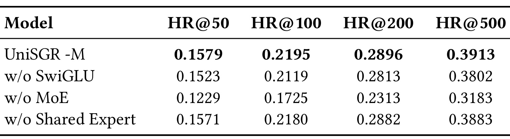
Table 5 中，完整 UniSGR-M 的 HR@100 是 0.2195，去掉 SwiGLU 后降到 0.2119，去掉 MoE 后大幅降到 0.1725，去掉 Shared Expert 后为 0.2180。HR@500 也类似，w/o MoE 从 0.3913 降到 0.3183，是最大退化。这个结果说明 sparse MoE 并非可有可无的“扩容装饰”，而是 UniSGR 处理多场景、多兴趣和多语义子空间的主要容量来源。SwiGLU 的收益也存在，但比 MoE 小；shared expert 的消融影响很轻，可能意味着路由专家已经吸收了大部分模式，或 shared expert 的贡献在当前规模下不明显。对复现者来说，这张表提醒不要只复现 VA-PMTP 和 TAT，而忽略 decoder 容量结构；如果用一个小 dense decoder 替代 MoE，统一生成排序的收益可能无法出现。
3.6 扩展曲线：小中模型区间收益最陡
论文还把 UniSGR 从 0.2B 扩到 2.0B，观察 HR@100 与 HR@500 的 scaling behavior。
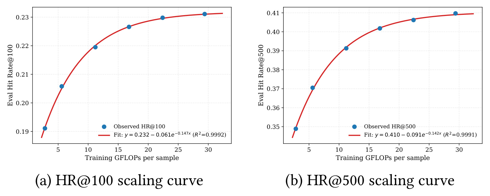
Figure 3 的两条曲线都呈现饱和式增长。左图 HR@100 随 training GFLOPs per sample 增加从 0.19 左右上升到 0.23 附近，拟合曲线的 $R^2$ 为 0.9992；右图 HR@500 从 0.35 左右上升到 0.41 附近，$R^2$ 为 0.9991。图里最重要的不是拟合公式本身，而是边际收益形状：0.2B 到 0.8B 的提升明显，继续扩到 1.6B、2.0B 仍有收益但变慢。这对工业系统很实际，因为首页推荐的推理预算有限，模型规模收益必须和 STARK、MoE 稀疏激活、beam width 和 ranking 共享放在一起算。如果 2.0B 只比 1.6B 多一点 HR，却显著增加部署复杂度，那么最优点未必是最大模型。
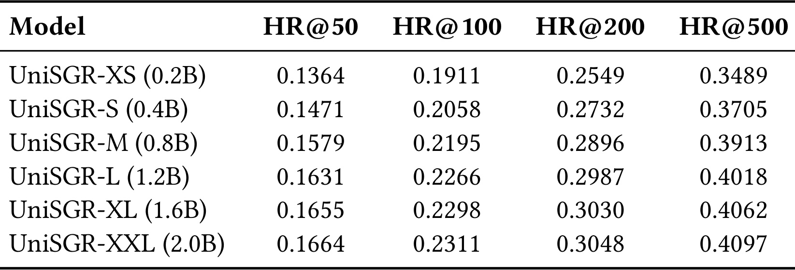
Table 6 给了具体数字：UniSGR-XS 0.2B 的 HR@100 为 0.1911，UniSGR-M 0.8B 为 0.2195，UniSGR-XXL 2.0B 为 0.2311；HR@500 从 0.3489、0.3913 到 0.4097。0.2B 到 0.8B 的 HR@100 提升约 14.86%，HR@500 提升约 12.15%，论文正文也强调小中规模区间收益最明显。这个结果对推荐模型 scaling 有两个启发。第一，semantic ID 生成器确实吃模型容量，不能只靠 tokenizer trick；第二，推荐系统的 scaling 不是无限堆参数，业务目标、服务延迟和多目标排序共享都会改变性价比。UniSGR 的实验没有公开成本曲线和在线延迟随模型规模变化，因此我会把它解读为“存在稳定 scaling trend”，而不是“越大越该上线”。
3.7 排序对齐：组件增量贡献
最后一组离线实验看 scenario-specific alignment 的组件：从 NTP baseline 开始，逐步加入 VA-PMTP、Ranking、TAT，以及完整 UniSGR。表 7 看 behavior-specific hit rate，表 8 看 ranking GAUC/AUC。
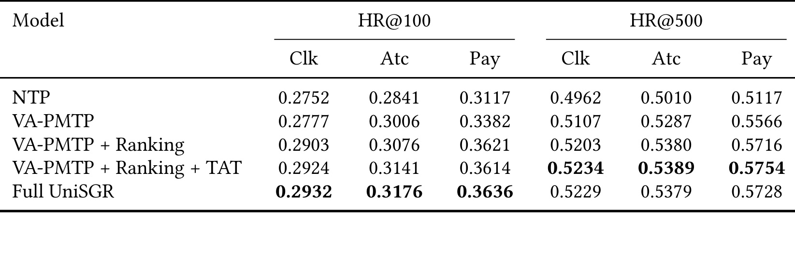
Table 7 显示，NTP 到 VA-PMTP 的变化主要提升 Atc 和 Pay：HR@100 下 Atc 从 0.2841 到 0.3006，Pay 从 0.3117 到 0.3382；Click 只从 0.2752 到 0.2777。这和方法设计一致，因为 VA-PMTP 通过行为权重把更高价值目标前移到生成训练里。加入 Ranking 后，Pay HR@100 到 0.3621，HR@500 到 0.5716；加入 TAT 后，Atc 和 HR@500 多个指标继续提高；Full UniSGR 的 HR@100 Clk/Atc/Pay 为 0.2932、0.3176、0.3636。这个结果说明排序对齐不是只改善最终 ranker 的 AUC，它也能反馈到生成候选的 hit rate，尤其是更靠近转化端的行为。
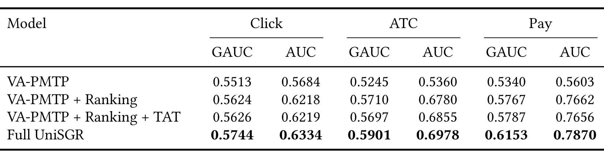
Table 8 则证明共享排序模块确实提高排序质量。VA-PMTP-only 的 Click GAUC/AUC 是 0.5513/0.5684，Full UniSGR 提升到 0.5744/0.6334；ATC 从 0.5245/0.5360 到 0.5901/0.6978；Pay 从 0.5340/0.5603 到 0.6153/0.7870。Pay AUC 的提升尤其大，说明生成器与 ranker 共享 decoder states 对稀疏高价值目标有明显帮助。结合 Table 7，可以看到 UniSGR 同时改善“候选是否命中”和“候选如何排序”两个层面。这里也有一个边界：指标来自内部场景，且目标 label、采样策略、负样本构造没有完全公开，外部读者不能直接判断这些 AUC 绝对值在其他电商平台是否可复现；但在同一实验口径下，组件增量方向非常一致。
论文还报告了在线 A/B：在 Lazada 首页 “Guess You Like” 场景，相比生产级级联推荐 baseline，UniSGR 带来 IPV +3.36%、Transaction Count +2.17%、GMV +5.68%。我没有把 Table 9 截成图片，因为该表只有一行并紧贴右栏 conclusion，强行扩展 bbox 会带入非表格文本；但这三个数字在正文中仍然是关键证据。在线结果比离线 HR 更能说明业务价值，不过论文没有披露实验周期、流量桶、显著性检验和完整 guardrail 指标，因此它更适合作为“已在真实首页场景验证方向”的信号，而不是可直接迁移的收益承诺。
4. 总结
UniSGR 的核心贡献可以理解为把生成式推荐从“产生候选”推进到“候选生成与多目标排序联合服务”。它用 Qwen3-VL 加协同对比学习构造 semantic ID tokenizer，用多场景预训练解决兴趣覆盖，用 VA-PMTP 和 task tokens 把 click、add-to-cart、purchase 的漏斗价值注入生成过程，再用共享 ranking module 把排序梯度传回生成器表征。最后，STARK 处理 semantic ID beam search 的服务效率，避免统一模型在推理阶段被 KV cache 复制和共享 prefix 重算拖垮。这些模块共同回答了一个工业推荐问题：如果要让生成式推荐进入真正排序链路，就不能只优化 HR@K，也不能让 ranker 作为外部补丁存在。
我认为论文最有启发的地方有三点。第一，semantic ID 的质量不只取决于 tokenizer 的语义可解释性，还取决于它能否承载排序目标。UniSGR 的 3L8192 消融说明碰撞率和码本规模有明确折中，FACL 和 TAT 则说明不同业务目标需要在 decoder 前缀里显式表达。第二，统一生成和排序要看梯度共享路径。只在生成后接 ranker 不够，论文强调 SID、encoder、decoder representation sharing，这才让 ranking loss 影响候选生成空间。第三，推荐生成模型的推理实现可能和文本生成完全不同。Semantic ID 短、beam 宽、prefix 共享多，STARK 正是利用这些结构特点设计服务端 mask 和 KV cache，而不是照搬 LLM 解码实现。
局限也很清楚。论文使用内部 Lazada 数据，出于保密没有公开用户量、item 量、流量规模、label 延迟和数据采样细节；外部复现只能验证方法形态，难以复现业务收益。在线 A/B 给出 IPV、Transaction Count 和 GMV 增量，但没有展示长期留存、负反馈、多样性、公平性或延迟成本的完整 guardrail。方法上，VA-PMTP 的业务权重、FACL 的负样本难度和 PLE ranking module 的配置都会影响最终收益，这些细节如果在不同平台上重设，可能改变结论。最后，UniSGR 仍然依赖离线 semantic ID tokenizer 的稳定性，若商品库快速变化、冷启动 item 多或多模态 metadata 噪声大，tokenizer 更新和历史用户序列兼容会成为额外工程问题。
后续值得跟踪三件事。第一，是否会有开源或更详细的技术报告补充 STARK 的 kernel、mask 预计算和 KV cache index 实现，因为这是把 semantic ID generative retrieval 推上线的关键。第二，UniSGR 与 OneRec、OneRanker、GPR 等统一召回排序路线的真实差异，需要在同一公开 benchmark 或半公开工业 benchmark 上比较，而不只是看各自内部表格。第三，Semantic ID 与 ranking objective 的结合可能会变成推荐系统的主线之一：未来的 item tokenizer 不会只问“语义是否相近”，还会问“这个离散标识是否让生成器、ranker 和业务漏斗共同受益”。对实际工程而言，UniSGR 给出的提醒是，生成式推荐如果要从研究 demo 进入首页生产链路，必须同时交代 tokenizer、训练目标、ranker 共享和服务端解码四个层面，缺任何一个都可能只是在级联系统旁边多放一个生成器。